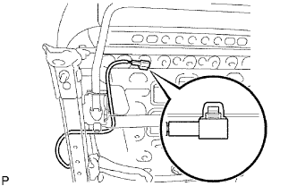

CỤM ĐAI BÊN TRONG GHẾ TRƯỚC > LẮP |
| 1. LẮP CỤM ĐAI TRONG GHẾ TRƯỚC (Cho Phía Hành khách trước) |
 |
Lắp nắp khóa cài trên đai trong.
Lắp đai an toàn bằng đai ốc.
| 2. LẮP CỤM ĐAI TRONG GHẾ TRƯỚC (cho Người lái) |
 |
Lắp nắp khóa cài trên đai an toàn.
 |
Cài khớp dây điện vào kẹp.
Lắp đai an toàn bằng đai ốc.
|  |
Cài khớp kẹp như trong hình vẽ.
| 3. LẮP CỤM GHẾ TRƯỚC (cho Phía người lái) |
Hãy để ghế vào trong cabin.
w/ Hệ thống cảnh báo đai an toàn:
Lắp giắc nối phía dưới ghế.
 |
Lắp ghế bằng 4 bu lông.
| 4. LẮP CỤM GHẾ TRƯỚC (Cho Phía Hành khách trước) |
Hãy để ghế vào trong cabin.
w/ Hệ thống cảnh báo đai an toàn:
Lắp giắc nối phía dưới ghế.
|
Lắp ghế bằng 4 bu lông.
| 5. LẮP CÁP VÀO CỰC ÂM ẮC QUY |
| 6. TIẾN HÀNH THIẾT LẬP BAN ĐẦU |
Tiến hành thiết lập ban đầu (Xem trang Kích chuột vào đây).